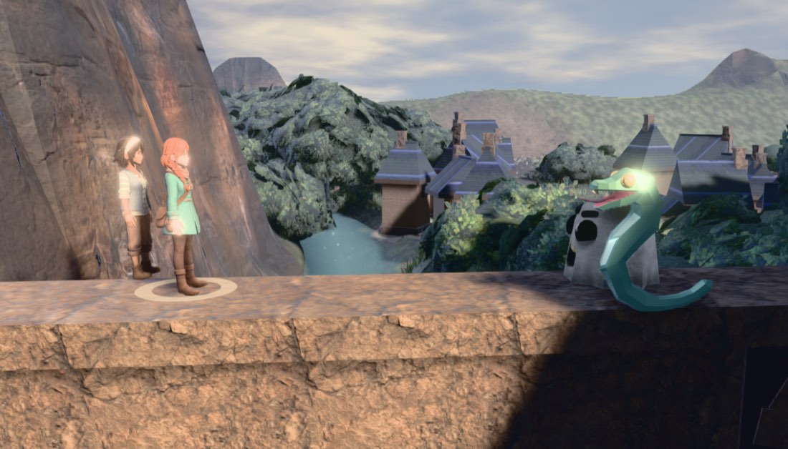
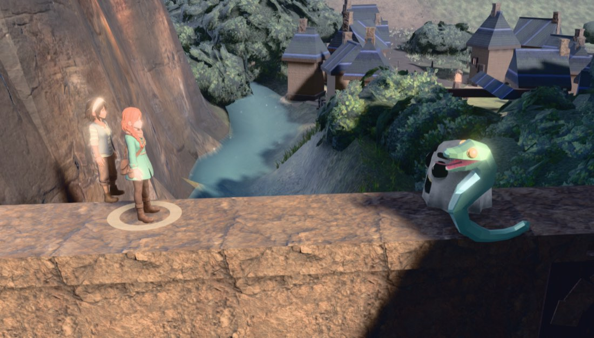
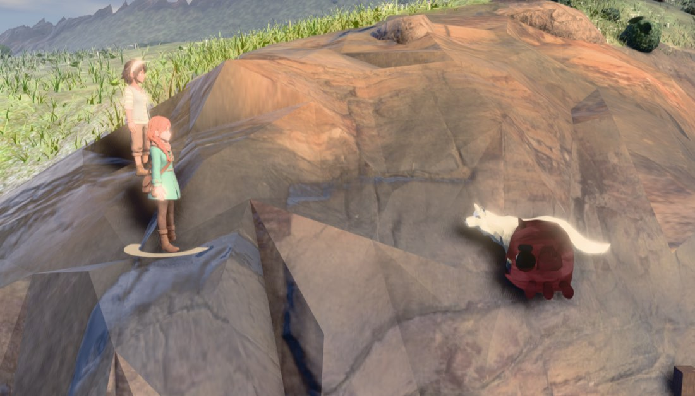
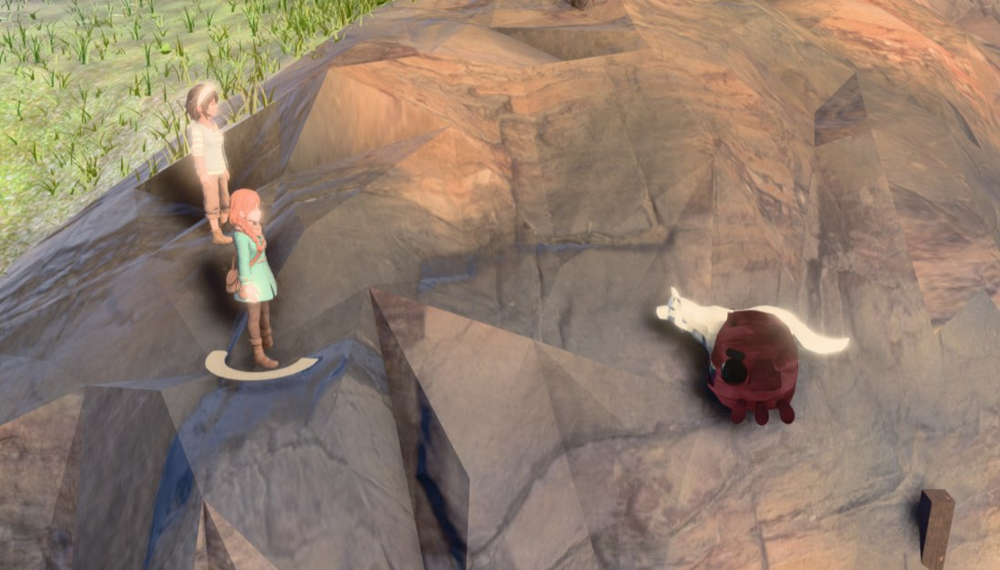
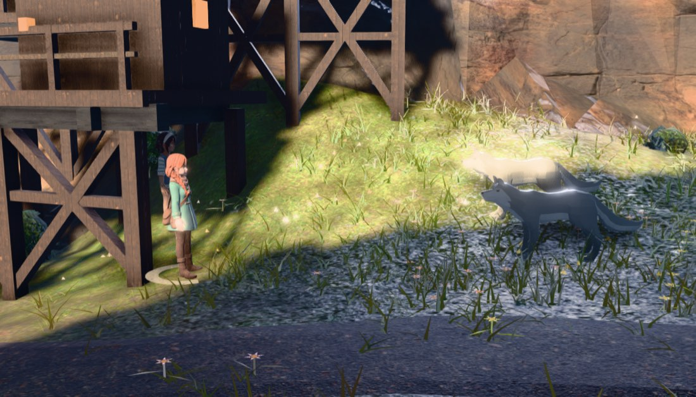
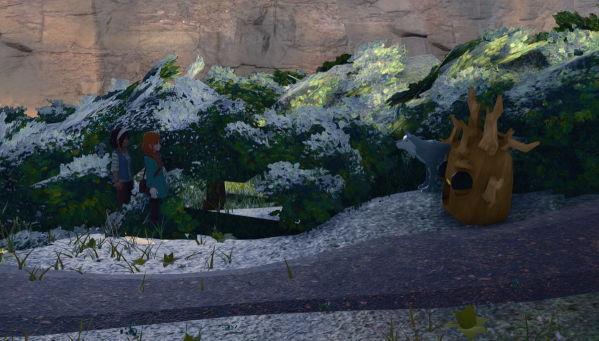

2026-08-09 · world arena only (?arena=world) · instruments
tools/battle_sep.mjs + the shared meter tools/battle_meter.mjs ·
board for the last measured gap between the world arena and being good enough to make default.
The camera lane's verdict, which this board exists to answer: “the world wins on picture and loses on legibility — two clean silhouettes on a low-contrast painted field is a composition; the valley is rock, foliage, houses and cast shadows.” The shot language moved worst-case foe height 14.6% → 18.8% of frame and left RGB silhouette contrast where it found it.
Three meter rules this repo has already paid for, inherited whole from
tools/battle_camera.mjs — which now imports the same file this tool does
(tools/battle_meter.mjs), because a meter that is copy-pasted is two meters that drift:
cutin_edge lesson, where a
chartreuse fringe sat on 79 of 112 shipped plates, every one gate-green, because the gate measured
brightness and a rim of the wrong hue at the right brightness is invisible to it.edgeRGB = RGB distance between a body's own edge band and the background ring around it.
edgeMin = the worst body in the frame. clutter = the ring's own luminance
spread. snr = edgeRGB ÷ clutter — because contrast alone is not legibility: a body 20 units
from a background whose own variance is 46 does not read.
Re-running the camera lane's own --mode=legibility on today's tree
(control/legibility.json) reproduces the water regression and does not reproduce the
meadow one. The meadow number the arc has been carrying (18.1 → 9.6) belongs to a pose the
solver no longer picks: the ray-budget lane's scatter-height rule changed the occluder set on
2026-08-08, which changed the placement, which changed the boom.
| site | edgeRGB cam off | cam on | 2026-08-08 board | clutter off → on |
|---|---|---|---|---|
| meadow | 18.55 | 20.31 | 18.14 → 9.61 | 41.7 → 46.3 |
| forest | 12.15 | 12.57 | 12.01 → 11.93 | 21.7 → 23.3 |
| water | 29.05 | 13.89 | 29.52 → 15.44 | 15.6 → 27.0 |
| crag | 20.26 | 20.56 | 20.12 → 20.75 | 17.5 → 17.2 |
Run-to-run noise on the control column is ≈2% (18.14→18.55, 12.01→12.15, 29.52→29.05, 20.12→20.26), so the meadow move is real and the standing gap is one site of four.
--mode=pitch, four sites × five boom rungs, one real battle each
(pitch.json). The shot solver ranks these four elevations; this is what each is worth
measured rather than proxied.
| site | 0.16 | 0.22 | 0.27 | 0.28 | 0.34 | spread |
|---|---|---|---|---|---|---|
| meadow edgeRGB | 20.98 | 20.64 | 18.31 | 9.96* | 18.20 | 15% |
| forest edgeRGB | 13.51 | 12.69 | 11.54 | 11.60 | 10.93 | 24% |
| water edgeFoe | 9.85 | 17.14 | 23.77 | 22.54 | 33.51 | ×3.4 |
| crag edgeRGB | 21.39 | 19.70 | 19.84 | 19.82 | 18.52 | 15% |
*meadow 0.28 staged a different formation, not merely a different boom — its body list differs. It is the pose the 2026-08-08 meadow number was measured on.
The boom axis is worth a factor of 3.4 on foe contrast at ONE site and 15–24% at the other three — and the shipped solver picked the worst rung at exactly the site where it matters.
scoreView's wBack term scores metres of clear depth behind each body — the
stand-in for “it has sky behind it”. Against measured contrast, within each site:
| site | corr(back-depth, edgeRGB) | corr(back-depth, snr) |
|---|---|---|
| water | −0.958 | −0.796 |
| crag | +0.911 | +0.981 |
| meadow | −0.332 | −0.297 |
| forest | −0.359 | −0.325 |
The proxy's SIGN is site-dependent. No weight — positive, negative or zero — fixes water without breaking crag. That is the whole case for measuring the thing itself, and it is the reason this lane did not ship a one-number change.
| lever | shader? | price | measured |
|---|---|---|---|
| (a) tonal term in the camera's own candidate scoring | no | ~50 ms once per battle, 4 offscreen renders | SHIPPED — §4 |
| (b) staging: put bodies against sky / open ground | no | re-opens the measured yaw decision (camera swung off the player's heading on 89.3% of cells at yawKeep 4, for zero extra staged cells) | folded into (a): the boom is the axis, the yaw stays the player's |
| (c) contact / drop shadow | no | ~free | ALREADY PRESENT — cast bodies run castShadow/receiveShadow into the real GTAO, and both marker rings are real ground decals. It separates feet from ground; it does not move a silhouette's edge band |
| (d) whole-frame post treatment (aerial recession, re-anchored on the arena) | no | 2 uniform writes/frame | BUILT, MEASURED NULL, DELETED — §6 |
| (e) fresnel / rim shader | YES | reopens the r185 colour class this module deletes by construction | NOT REACHED — §8 |
(f) cast-only lift via emissive / envMapIntensity | no | per-material, ~free | REFUTED BEFORE BUILDING — the sign of (bodyL − ringL) is mixed within a single frame: at meadow +42.0, +25.3, −46.5, −42.5 across four bodies. A uniform lift raises contrast for two and destroys it for two |
public/js/battle_world.js, TONE. Once the cast has arrived, the game runs
the meter's own subtraction on itself: per candidate boom, render the arena into a
320×180 offscreen target without the cast and again with it; the difference is each body's silhouette.
Score is the RGB distance between a body's edge pixels and the background ring around them,
half the mean and half the minimum — the worst-placed body is the one that fails to
read — minus the ring's clutter.
battle_sep.mjs measuring the real pipeline is what judges.convertSRGBToLinear they warn about: the renderer performed none.
It was measured wrong first: ranking raw linear bytes crushes a dark site and picked
the wrong boom at the forest (edgeRGB 12.88 → 11.11). Tone mapping is still not applied, and that is
the probe's stated approximation.proxy tier (a proxy solid is the wrong colour to rank a background against) and applies
its answer only while the opening round shot is still easing, so it reads as one
continuous move. If a beat already owns the camera the answer is recorded and not applied.Cost measured: 36.9 / 41.9 / 56.1 / 62.2 ms, once per battle, against a shipped
trigger-to-first-battle-frame of p50 688 ms. ?btone=0 is the A/B on one build.
--mode=ab, one page, one build, one flag (ab.json).
| site | boom off → on | edgeRGB | edgeMin (worst body) | clutter | snr |
|---|---|---|---|---|---|
| meadow | 0.16 → 0.16 (refused) | 20.69 → 20.83 | 7.56 → 8.24 | 46.97 → 46.66 | 0.440 → 0.446 |
| forest | 0.22 → 0.34 | 12.65 → 12.67 | 7.35 → 7.52 | 22.81 → 23.08 | 0.555 → 0.549 |
| water | 0.16 → 0.34 | 13.54 → 22.04 (+63%) | 5.48 → 10.21 (+86%) | 27.59 → 17.05 (−38%) | 0.491 → 1.293 (+163%) |
| crag | 0.16 → 0.34 | 20.47 → 19.14 (−6.5%) | 2.45 → 5.12 (+109%) | 17.39 → 17.53 | 1.177 → 1.092 |
The crag regression is real and it is the score doing what it was built to do. Crag's frame mean falls 6.5% while the body that was invisible in it — Vesper's cream shirt against a pale grass field, edgeRGB 2.45 — more than doubles. Half-the-mean-and-half-the-minimum trades exactly this way, deliberately: a mean that hides one unreadable body is the defect the staging solve was fixed for once already. If a later round disagrees, the weight is one number.
play3d already ships an aerial-perspective pass whose ramp R11 deliberately anchors on the
player. A battle is a different subject — a fight up to 13 m wide that may have relocated 13 m
from her — so the ramp was re-anchored onto the arena every frame, derived from the farthest
combatant's own distance from the lens, with the cast exempt by arithmetic rather than by a
material.fog list. Two uniform writes, no shader, restored on teardown.
| site | edgeRGB off → on | clutter off → on | at extinction 6 | at extinction 3 |
|---|---|---|---|---|
| meadow | 21.14 → 21.41 | 47.4 → 46.4 | — | — |
| forest | 12.38 → 12.19 | 23.2 → 22.9 | — | — |
| water | 13.36 → 12.12 | 27.1 → 24.9 | 13.03 | 12.66 |
| crag | 21.81 → 20.25 | 17.4 → 16.1 | 20.38 | 20.23 |
The contrast never moved, at any strength (sep-ab.json,
sweep.json). The reason is structural and worth more than the feature: at three of the
four sites the background a body actually fails against is two to four metres behind it — a cliff
face at water and crag, near grass at meadow — and no distance-keyed cue can separate a body from
something it is nearly touching. Aerial perspective is a cue for the far band; this legibility problem
lives in the near one. The code is deleted (the repo's standing ruling); the derivation is recorded in
battle_world.js so it is not re-tried blind.
These are the exact frames the §5 numbers were measured on, opened and looked at.






My verdict in one line: one site clearly better, one unchanged, one a wash, one still bad — and at the two sites that still fail the cast is standing in or against near cover at its own value (a hedge bank, a building's shadow), which is not something a camera can be asked to fix.
layers against the CAMERA, never per
object — so it is a fresnel through onBeforeCompile, which would be this module's first
shader. If a later lane reaches for it, the guarantees it reopens are named: (1) the grade must convert
to display space explicitly, (2) no hand convertSRGBToLinear anywhere near it, and
(3) IU() untouched. The non-shader alternative with the same reach is a precomputed
inverted-hull shell (expanded positions on a cloned geometry, BackSide,
MeshBasicMaterial, skeleton shared) — a graphic outline rather than a light, and a look
decision rather than a fix.| gate | result |
|---|---|
node tools/battle_sim.mjs | ALL ENVELOPES GREEN · 6 engine property tests passed |
node tools/encounter_sim.mjs | ENCOUNTER INTEGRATION GREEN |
node tools/arena_playtest.mjs | GREEN — all suites passed (2 of 3 runs; the first run reported one suite failed and did not name it in the tail, and the two re-runs are clean. This gate opens the page WITHOUT ?arena=world, so battle_world is the frozen one-object default path and none of this lane's code loads in it — recorded as flake, not explained away) |
node tools/transition_test.mjs --port=3000 | PASS — 168 assertions ok, 0 failed |
node tools/ray_budget.mjs --port=3000 | GREEN — W = 2 / 9761 (0.02% of budget), implied worst staging solve ~407 ms |
fps, world arena, strike shot (rAF ticks — not info.render.frame, which the composer increments once per pass and reads ~8× too fast) | 241.9 → 241.5 fps, −0.17% — the world arena's lead over the diorama (243.5 vs 184.7) is intact. The probe is a one-time ~50 ms cost at battle start, not a per-frame one |
On tonal separation: not yet — but the thing standing in the way is no longer the camera, and it is no longer the case that “the plates are more legible than the valley” across the board.
What changed: the meadow regression the arc has been carrying does not exist on this tree, and the water one is fixed (+63% contrast, +86% on the worst body, +163% snr). Two of four sites now read.
What still stands, named precisely:
Recommendation: the world arena is close enough that the remaining work is placement quality and cast lighting, not arena choice. Making it default now ships a fight that reads at two of four sampled sites and is muddy at the other two — that is a call for the user, and the honest input to it is that the diorama's advantage was never the arena, it was that a painted plate is a background somebody composed.